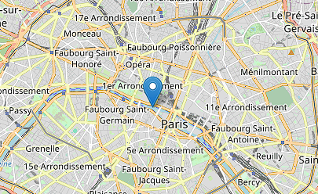

https://find-ip-location/search
#1 IP LOCATION FINDER
Since 1998
Bienvenue sur l'outil de localisation d'adresse ip.
Rentrez l'adresse ip dont vous voulez récupérer la localisation dans le champ en dessous et cliquez sur entrer.
